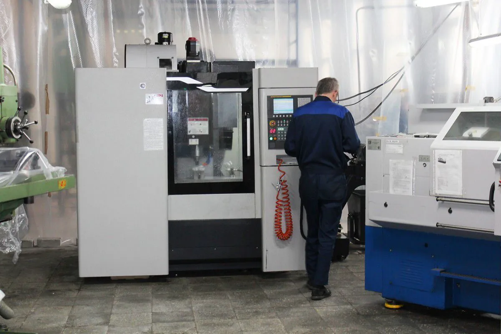
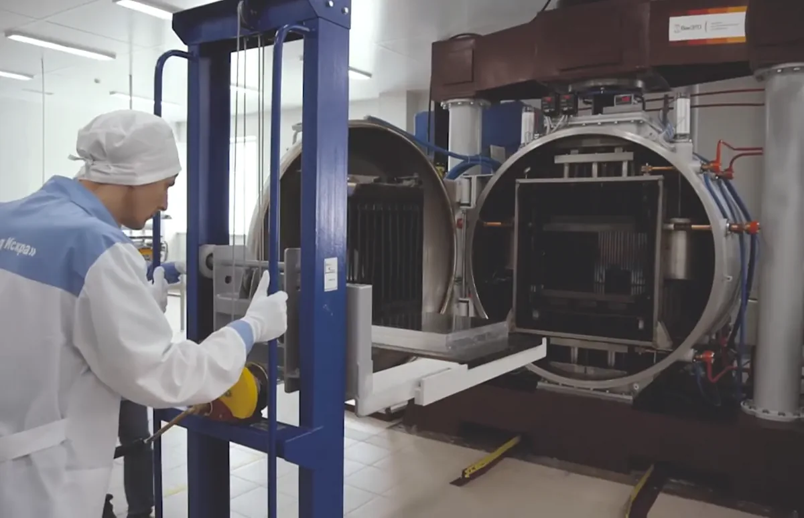
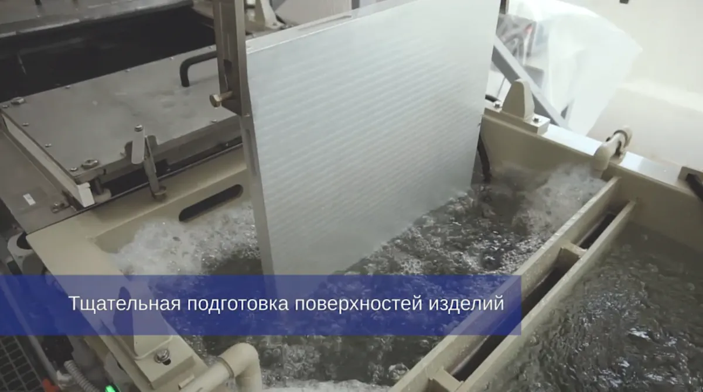
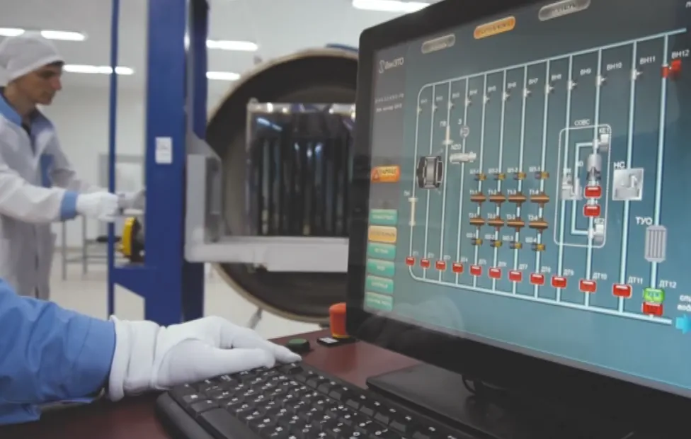
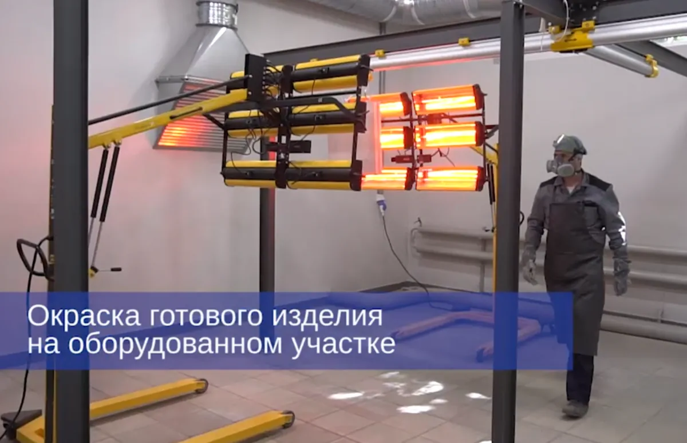
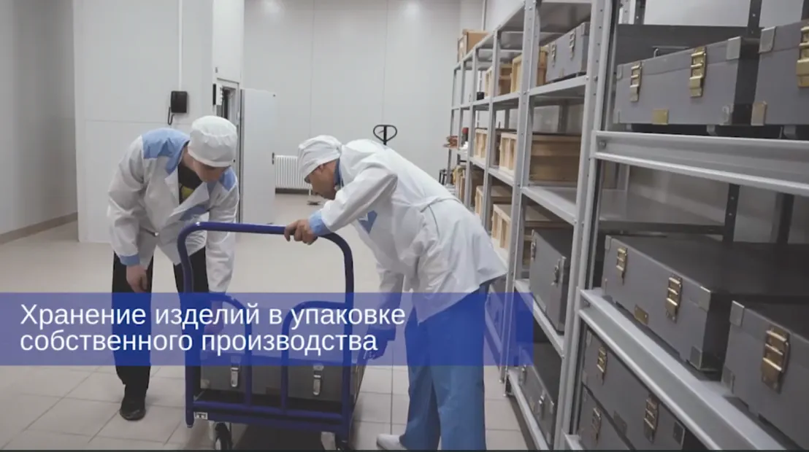

Услуги
АО «НПП «Завод Искра» современное предприятие, обладающее всем набором технологических и производственных процессов, необходимых для производства изделий электронной техники. Наличие современного высокотехнологичного оборудования также позволяет оказывать услуги промышленного характера.
Услуги по обработке металлов с применением технологии диффузионной сварки
АО «НПП «Завод Искра» располагает единственной в России диффузионной установкой обладающей самым большим усилием сжатия и позволяющей обрабатывать заготовки размером до 600х600х470мм.
В 2019 году состоялся запуск производства с технологией диффузионной сварки. Сейчас предприятие осуществляет полный цикл: от подготовки поверхностей до хранения готового изделия.

Основные параметры процесса диффузионной сварки:
- высокий вакуум (5,10-5 Па);
- высокая температура (до 900°С);
- давление до 200 тонн;
- время.

Технология диффузионной сварки позволяет изготавливать:
- корпуса аппаратуры с жидкостным охлаждением;
- волноводно-щелевые антенны;
- волноводные тракты с жидкостным охлаждением;
- распределительные и контрольные тракты систем рлс;
- волноводы и прочие волноводные элементы;
- компоненты турбокомпрессоров;
- сложные композиты различных типов.

Диффузионная сварка проходит в две стадии:
Первая стадия: вакуумирование объёма печи, нагрев материалов до высокой температуры и приложение давления, что вызывает пластическую деформацию микровыступов, разрушение и удаление окисной плёнки и образование металлических связей на микроучастках, где под влиянием приложенного давления возникает физический контакт.
Вторая стадия: ликвидация оставшихся микронеровностей и образование объемной зоны взаимного соединения под действием диффузии.

Способ идеален, если надо добиться прочного монолитного соединения разнородных металлов без образования грубого сварного или паечного шва.
Диффузионное соединение обеспечивает высокое качество изделий, повышает их надёжность, увеличивает ресурс работы и является экономически эффективным технологическим процессом.
Специальный участок производства позволяет уделять особое внимание тщательной подготовке поверхности изделий (способы подготовки и обработки поверхностей оказывают большое влияние на прочность соединения при диффузионной сварке в вакууме).
Преимущества диффузионной сварки:
- высокое качество шва, монолитность соединения;
- возможность получения соединения с большой площадью сварной зоны;
- очень высокая прочность соединения;
- контролируемая деформации свариваемых деталей;
- сохранение массы конструкции;
- возможность создания изделий сложной конструкции и конфигурации;
- получение соединения, обладающего всеми свойствами исходного материала, в том числе и прочностью;
- создание прецизионных соединений;
- отсутствие плавления соединяемых материалов, что исключает проблемы, связанные с ликвацией, растрескиванием и остаточными напряжениями;
- отсутствие расходных материалов (дорогостоящие припои, флюсы, пасты);
- экологически чистый процесс (не происходит выделение лучистой энергии, газов, мелкодисперсной пыли);
- применение вакуума позволяет получить соединение с минимальным содержанием вредных примесей, даже при сварке высокоактивных металлов.

Работа на оборудовании осуществляется с соблюдением всех важных условий процесса под контролем квалифицированных специалистов, что гарантировано даёт отличные результаты.

По вопросам услуг диффузионной сварки обращаться по телефону: +7 (8422) 46-82-04
Заявки, запросы отправлять на факс: (8422) 46-37-46, 46-37-47
E-mail: zavod@npp-iskra.ru
Телефон для справок: 8 (8422) 46-37-47, 39-70-33, 39-76-45.